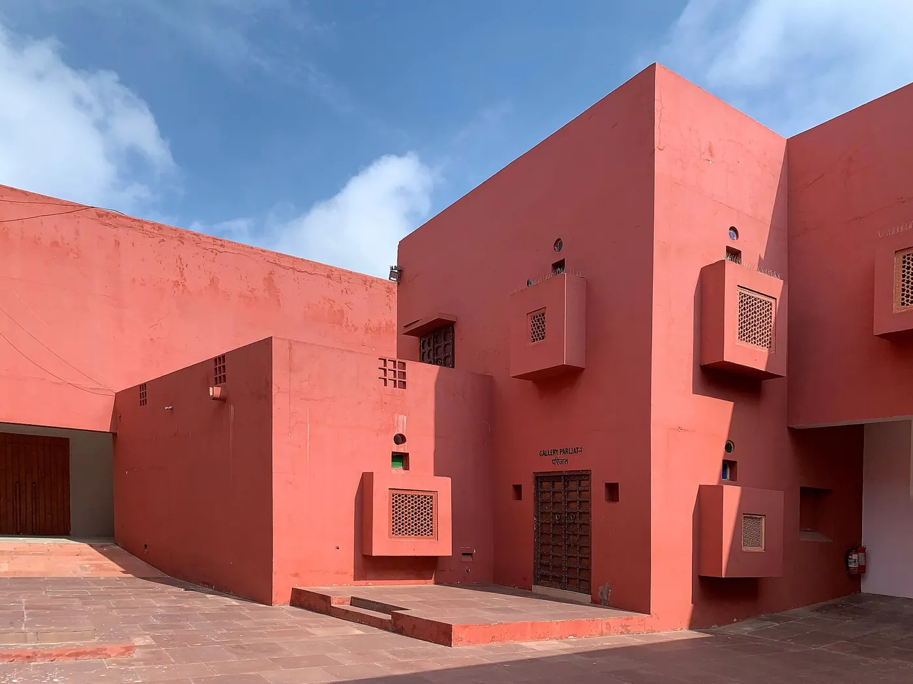
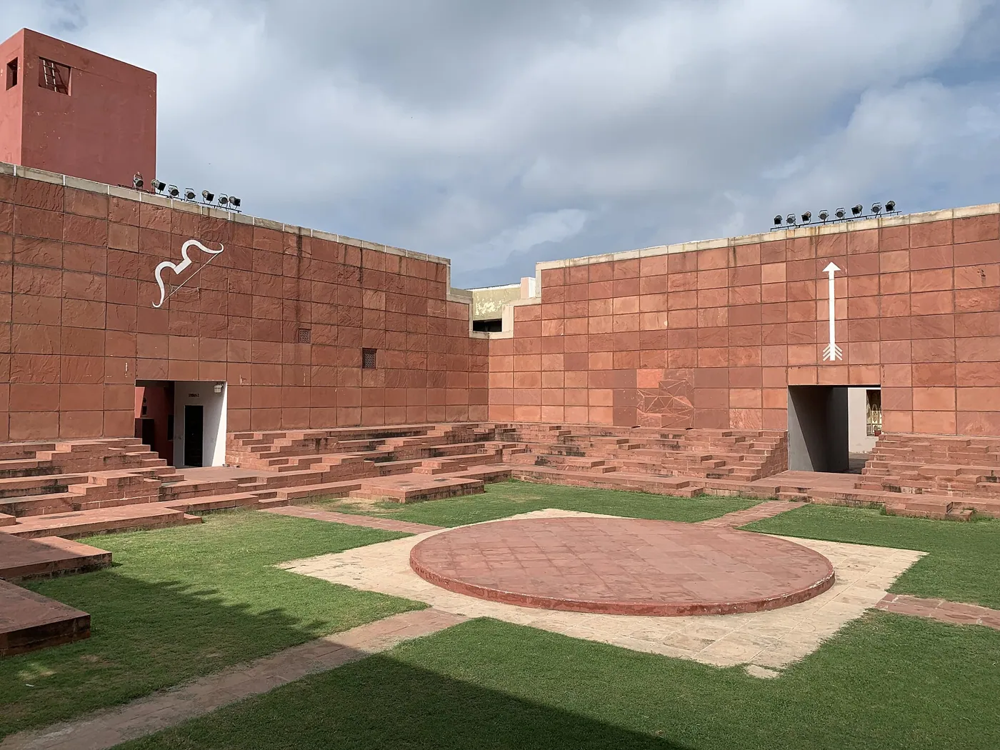
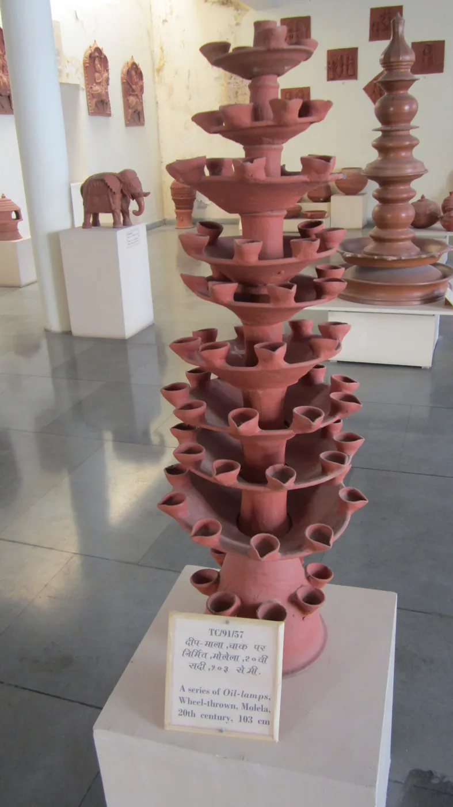
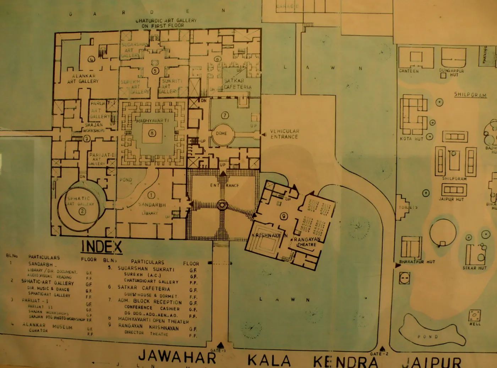
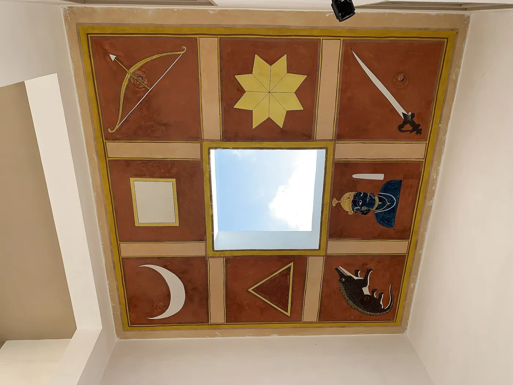
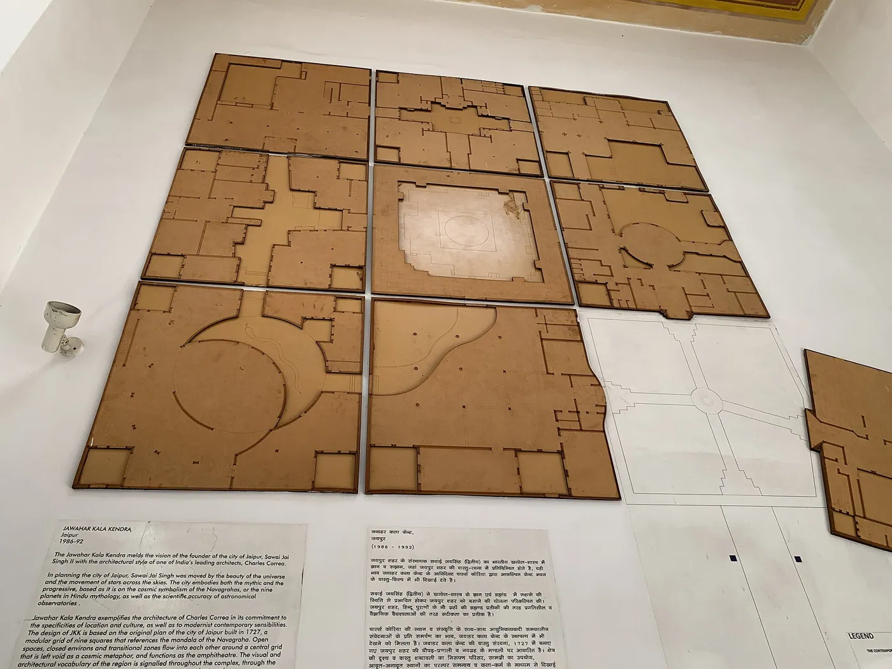

1/8 · Exterior · Jawahar Kala Kendra, JaipurPhoto: Chainwit · CC BY-SA 4.0 · source2/8 · Exterior · Jawahar Kala Kendra, JaipurPhoto: Chainwit · CC BY-SA 4.0 · source
3/8 · Exterior · Jawahar Kala Kendra, JaipurPhoto: Chainwit · CC BY-SA 4.0 · source
4/8 · Exterior · Jawahar Kala Kendra, JaipurPhoto: Chainwit · CC BY-SA 4.0 · source5/8 · Interior · Jawahar Kala Kendra, JaipurPhoto: Chainwit · CC BY-SA 4.0 · source
6/8 · Interior · Jawahar Kala Kendra, JaipurPhoto: Chainwit · CC BY-SA 4.0 · source
7/8 · Detail · Jawahar Kala Kendra, JaipurPhoto: Chainwit · CC BY-SA 4.0 · source
8/8 · Drawing · Jawahar Kala Kendra, JaipurPhoto: Chainwit · CC BY-SA 4.0 · sourceCulture & sport · Regionalism
Jawahar Kala Kendra
Charles Correa · Jaipur, India · 1991
Key featuresA nine-square plan based on the navagraha mandala and the city plan of Jaipur.
- Architect
- Charles Correa
- Place
- Jaipur, India
- Year
- 1991
- Typology
- Culture & sport
- Movement
- Regionalism
- Region
- South Asia
See it on the wall